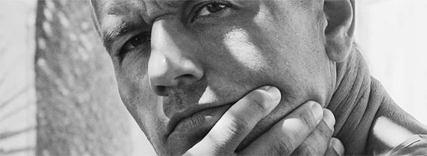
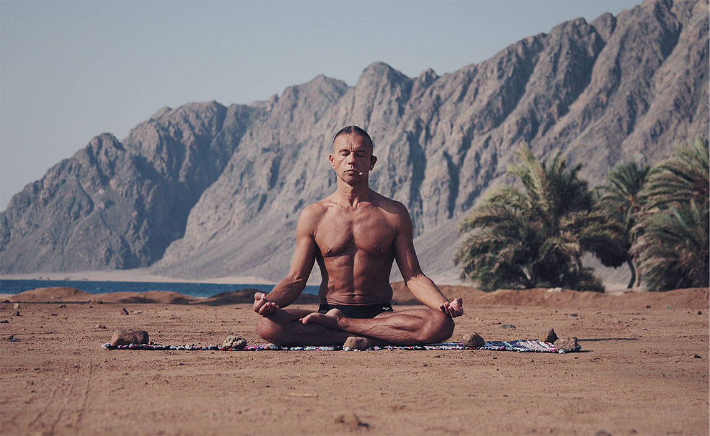
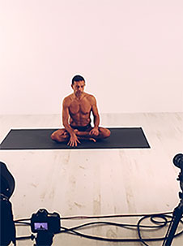
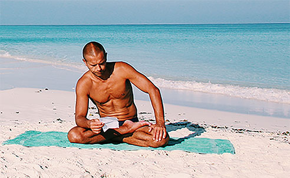
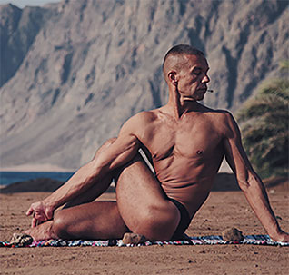
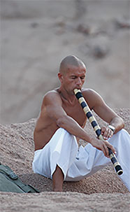
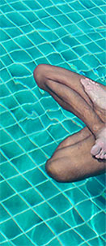

Born on December 22, 1960 in Kiev (Ukraine).
1964-1968 - education at the Nauma Ostashinsky children's art school (Kiev, Ukraine).
1968-1969 - training in the first class of a comprehensive school in a sanatorium-boarding school for children with various forms of tuberculosis (Irpen village, Kiev region, Ukraine).
1969-1970 - education in the second grade of secondary school in boarding school N9 for children with severe forms of scoliosis. Classes special physical therapy according to the method of Professor Zherdinovsky and Dr. Putilova. Swimming training and swimming training for children with scoliosis.
1970-1978 - education in secondary school N57 (Kiev, Ukraine).
1970-1976 - swimming lessons at the junior sports school of the voluntary sports society “Spartak” (Kiev, Ukraine). The second sports category.
1976-1978 - classes of high-speed underwater sports (“Pervomaysky” swimming pool, Kiev, Ukraine). The first sports category.
1978-1984 - training at the Kiev Polytechnic Institute. Faculty of electroacoustics, specialty "Information processing and recording systems".
1978-1985 - practicing underwater sports (in modern terminology - diving) in the sports and technical club "Atlantis" of the Kiev Polytechnic Institute.
1981-1983 - Head of the section of high-speed underwater sports in the sports and technical club "Atlantis" of the Kiev Polytechnic Institute. Coach of the institute team on high-speed underwater sports. He began to apply the exercises of gymnastics yoga training in general physical training for athletes, submariners. At the same time he began to develop a system of breathing exercises, which later became known as the “Plavita Sadhana”.
1983 - Awarded professional qualification “Third Class Diver of the Third Specialization Group”.
1984 - engineer at the Research Institute. Manuilsky (secret factory producing sound recording equipment for the KGB of the USSR, Kiev, Ukrainian SSR)
1985-1989 - engineer-hydrologist in the Hydrology Laboratory of the Institute of Hydrobiology of the Academy of Sciences of Ukraine.
1988 - study at the faculty of advanced training for leading physical education workers and coaches of the Kiev Institute of Physical Culture. Specialization - general physical training and swimming.
1987 - daughter Elena was born.
1989 - son Anton was born.

1989-1994 - part-time translator in the Sofia publishing company (Kiev, Ukraine).
1991-1993 - head of the yoga and yogaterpai sector in the center of alternative medicine "Avicenna" at the corporation "Medekol" ("Medicine-Ecology", Kiev, Ukraine).
1991 - participation in the conference of the Association of Yoga of the Soviet Union (Moscow, RSFSR).
1993 - participation in the World Conference “100 Years of Yoga in America” (Pokono Mountains, Pennsylvania, USA).
1994- to the present - "volunteer yogaticher".

1995 - participation in the World Conference for Yoga for Peace (Jerusalem, Israel).1995 - the first edition of the book The Third Force Discovery.1996 - The first edition of the book "Yoga of eight circles."
1995 - participation in the World Conference for Yoga for Peace (Jerusalem, Israel).
1996-2000 - cooperation with the Israeli Yogateachers Association in the framework of the advanced training program for graduates of the specialty Yogateacher Institute of Wingate.
1999 - the first artwork in the style of "psychotronic art."
2003 - the beginning of work on the Yoga23 methodology and the opening of a yoga studio in Kiev.
2015-2018 - a summary of the experience of methodical work and the creation of Yoga Workout Self-Adjustment System.





"Nothing Personal". Collection of "white" poems. M.
"The third discovery of power." Psychedelic novel.
"Yoga of eight circles." Toolkit.
"Nothing for later." In collaboration with Denis Zikeev and Olga Shevchenko. Collection of poems and lyrics.
“Hatha Yoga. Conceptual essay. Review work.
"Nothing Personal". Collection of "white" poems. M.
"The third discovery of power." Psychedelic novel.
"Yoga of eight circles." Toolkit.
"Nothing for later." In collaboration with Denis Zikeev and Olga Shevchenko. Collection of poems and lyrics.
“Hatha Yoga. Conceptual essay. Review work.
"Nothing Personal". Collection of "white" poems. M.
"The third discovery of power." Psychedelic novel.
"Yoga of eight circles." Toolkit.
"Nothing for later." In collaboration with Denis Zikeev and Olga Shevchenko. Collection of poems and lyrics.